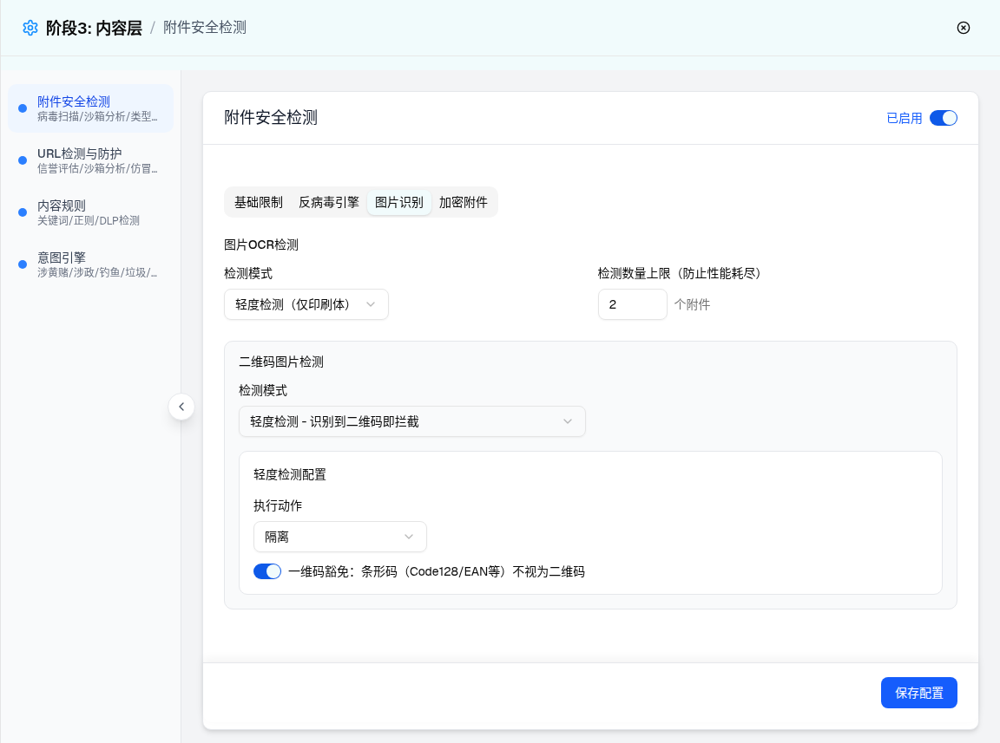
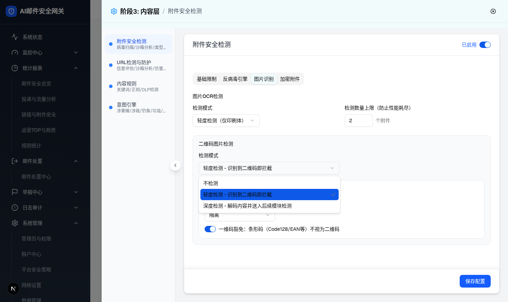
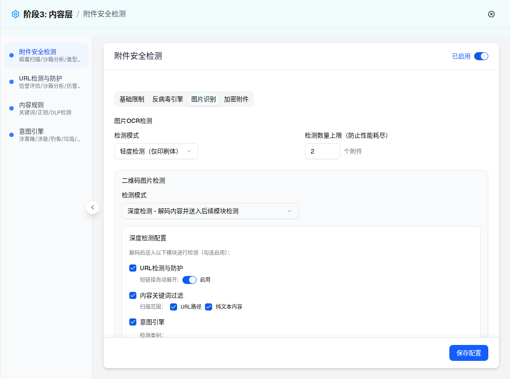
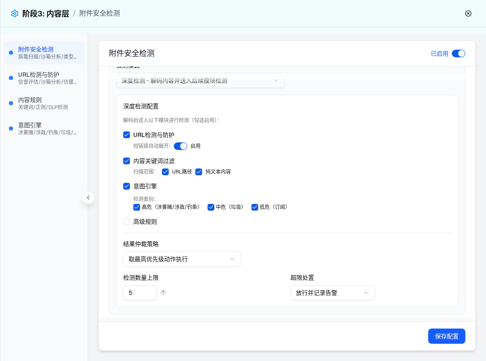
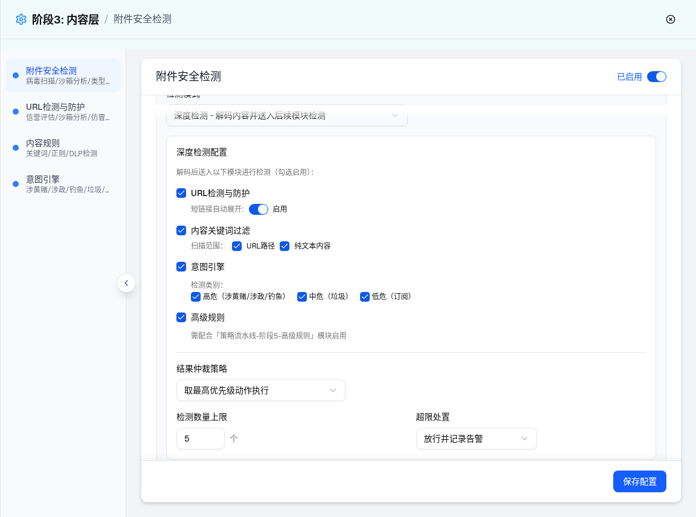
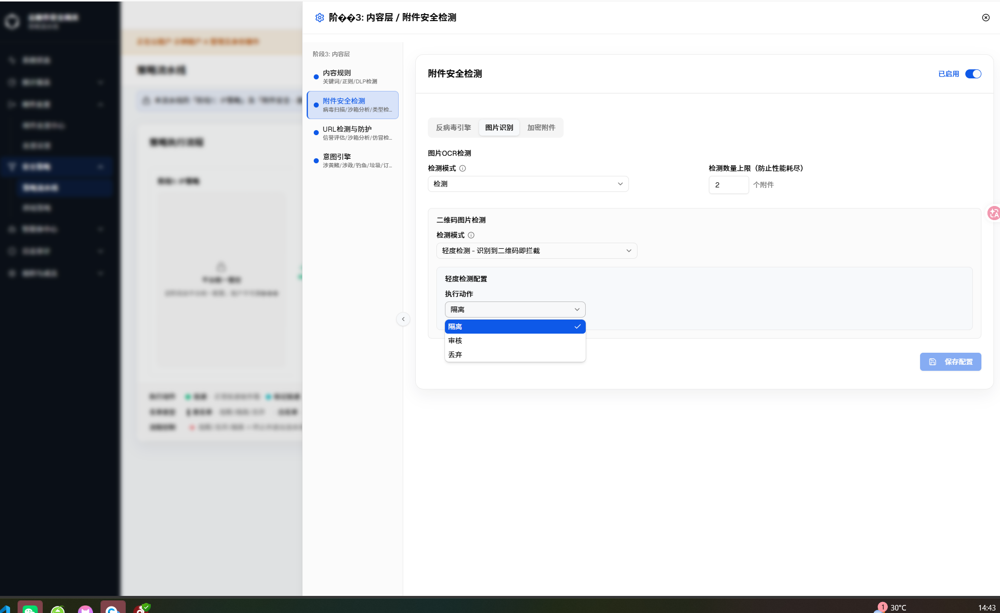

| 所属组件 | 2.3 附件安全检测配置 Tab 组 AttachmentSecurityModule |
| 主文件 | index.html |
| 触发路径 | 层级1 抽屉默认态 → Tab 组点击「图片识别」；3B 深度态由「二维码图片检测-检测模式」下拉切换到深度检测触发（条件渲染） |
| demo 组件 | attachment-security-module.tsx → ImageDetectTab（direction=receive） |
| 浏览器实测 | 轻度默认态面板节点 37；切深度后节点 109（条件渲染块展开）。二维码模式下拉 3 项；深度路由 checkbox 9 个（默认 8 勾选、高级规则未勾选）；上限输入 99 → 立即钳位 50。 |





| 序号 | 元素 | 默认值（receive） | 选项/校验 | 交互（浏览器实测） | i18n key（内联 LABELS） |
|---|---|---|---|---|---|
| 1 | OCR 检测模式 Select | 轻度检测（仅印刷体） | 不检测 / 轻度 / 深度（手写+印刷，推荐外发方向） | send 方向标题追加「（外发方向建议启用深度检测，防截图泄密）」且默认深度（源码） | ocrDetection / none / ocrLight / ocrDeep |
| 2 | OCR 检测数量上限 Input | 2 个附件 | 非法输入回退 1 | - | ocrLimit / attachments |
| 3 | 二维码检测模式 Select | 轻度检测 - 识别到二维码即拦截 | 3 项（实测下拉截图） | 条件渲染：none→无子块；light→轻度配置块；deep→深度配置块（节点 37→109） | qrDetection / qrLight / qrDeep |
| 4 | 轻度：执行动作 Select | 隔离 | 隔离/审核/阻断/丢弃（4 项） | - | lightConfig / execAction |
| 5 | 轻度：一维码豁免 Switch | 开 | - | 切换开关 | barcodeExempt |
| 6 | 深度：URL检测与防护 Checkbox | 勾选 | 勾选时展开「短链接自动展开」Switch（默认开） | 取消勾选收起子行（预览已复刻） | urlDetection / expandShortLink |
| 7 | 深度：内容关键词过滤 Checkbox | 勾选 | 子行「扫描范围：URL路径 / 纯文本内容」两个 checkbox 默认勾选 | 同上 | keywordFilter / scanRange / urlPath / textContent |
| 8 | 深度：意图引擎 Checkbox | 勾选 | 子行「检测类别：高危（涉黄赌/涉政/钓鱼）/ 中危（垃圾）/ 低危（订阅）」默认全勾选 | PRD：全部取消类别等效禁用该路由 | intentEngine / detectCategory / highRisk / mediumRisk / lowRisk |
| 9 | 深度：高级规则 Checkbox | 未勾选 | 勾选后展开提示「需配合「策略流水线-阶段5-高级规则」模块启用」 | demo 仅提示文案，无跳转链接、无阶段5启用状态联动校验（PRD §4 要求提示「需先启用」） | advancedRule / advancedRuleHint |
| 10 | 结果仲裁策略 Select | 取最高优先级动作执行 | 2 项：取最高优先级动作执行 / 按模块顺序首个命中执行 | - | arbitration / highestPriority / firstMatch |
| 11 | 检测数量上限 Input | 5 个 | min 1 / max 50，超界立即钳位（实测 99→50） | 与 PRD §4 边界一致 | detectLimit / items |
| 12 | 超限处置 Select | 放行并记录告警 | 2 项：放行并记录告警 / 隔离兜底 | - | exceedAction / passWarn / isolateFallback |
| 比对项 | demo 实际 DOM | 提取的 HTML 预览 | 是否一致 |
|---|---|---|---|
| 轻度态面板 | 节点总数 37；combobox [轻度（仅印刷体）, 轻度-识别即拦截, 隔离]；switch [checked]；number [2] | 同结构同默认值 | 一致 |
| 深度态面板 | 节点总数 109；combobox [轻度OCR, 深度-解码路由, 取最高优先级动作执行, 放行并记录告警]；checkbox 9 个 [8×checked, 1×unchecked]；number [2, 5] | 切深度后同结构；9 个 checkbox 同默认态 | 一致 |
| 下拉选项 | 二维码模式 3 项（截图验证） | native select 3 项同文案 | 一致（Radix Portal 简化为原生 select） |
| 条件子行 | route checkbox 取消勾选后子行不渲染；高级规则默认无提示行 | 预览 JS 同联动 | 一致 |
| 钳位 | 输入 99 → input.value 立即变 50 | 预览 JS 同钳位逻辑 | 一致 |
需求名称：GT-12952 附件安全模块：执行动作去掉拒收，部分策略执行动作增加审核
| 变更点 | 变更前 | 变更后 | 关联代码路径 |
|---|---|---|---|
| 二维码图片检测 · 轻度检测配置 · 执行动作（qr_light_action）选项调整 | 隔离 / 审核 / 拒收 / 丢弃（4 项，注：主文档「UI 元素清单」历史记录为「隔离/审核/阻断/丢弃」，阻断/拒收为同一选项的历史命名） | 隔离 / 审核 / 丢弃（3 项）；去掉「拒收」选项，默认值 quarantine（隔离）不变 |
src/components/security/attachment-security/ImageDetectTab.tsx（LIGHT_ACTIONS 常量） |
触发路径：策略流水线 → 附件安全检测「配置」→「图片识别」Tab → 二维码图片检测「检测模式」选择「轻度检测 - 识别到二维码即拦截」→ 点击「轻度检测配置 · 执行动作」下拉触发器 → 下拉列表展开

| 选项值 | 动作名称 | i18n key |
|---|---|---|
| quarantine | 隔离 | attachmentSecurity.actions.quarantine |
| audit | 审核 | attachmentSecurity.actions.audit |
| discard | 丢弃 | attachmentSecurity.actions.discard |
本增量导致「UI 元素清单」表第 4 行「轻度：执行动作 Select」的选项描述过期：
注：深度检测配置区「超限处置」（放行并记录告警/隔离兜底）不属于本次变更范围，未改动。
单元测试套件（AttachmentSecurityPage.test.tsx、i18n-parity、save-contract，共 530 项）全部通过；audit 文案已在 zh/en/ru/th 四语命名空间下确认存在，无需新增 i18n key。截图由用户在实际运行环境中提供（浏览器实拍，已确认为本次改动后的真实渲染态）。